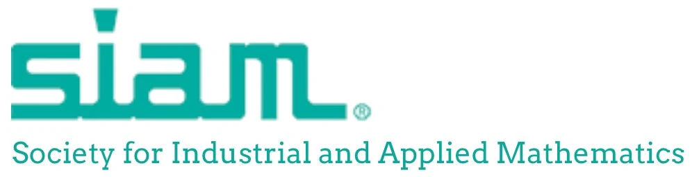
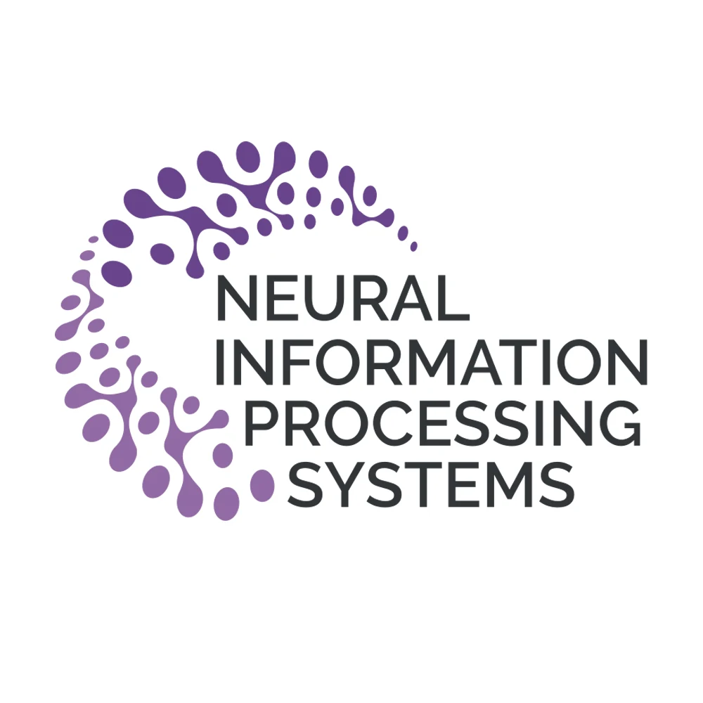
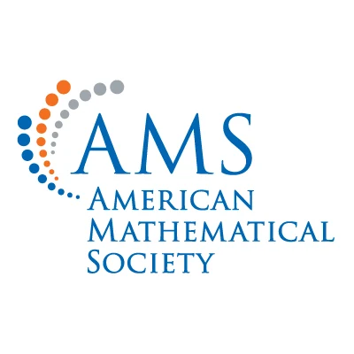

Louisiana State University
Conferences
Presentations, workshops, and mathematical exchange.



SIAM Conference on Mathematics of Data Science (MDS24), Oct 20–25, 2024.
I presented a talk on Topological Neural Networks and their applications,
based on the upcoming article “Introduction to Topological Neural Networks”
and the Python package TopoX.
Neural Information Processing Systems, NeurIPS 2023, Dec 11–16, 2023.
I participated in the NeurReps workshop on Symmetry and Geometry in Neural
Representations, where we presented our work on Topological Deep Learning
and the TopoX package.
SIAM, The 6th Annual Meeting of the SIAM Texas Louisiana Section, Nov 3–5, 2023.
Summer School in Mathematics of Machine Learning, MSRI, Jul 25–Aug 5, 2022.
This school introduced graduate students to foundational results in deep
learning, including applications in vision, natural language processing,
and reinforcement learning.
IMA Math-to-Industry Boot Camp, University of Minnesota, Jun 20–Jul 29, 2022.
We completed courses in applied statistics, data science, machine learning,
optimization, and stochastic modeling.
4th LBRN-LONI Scientific Computing Bootcamp, LSU, May 2021.
19th Annual Aldrich Multidisciplinary Graduate Research Conference, Mar 2017.
Student Leadership Conference, Memorial University of Newfoundland, Jan 2017.